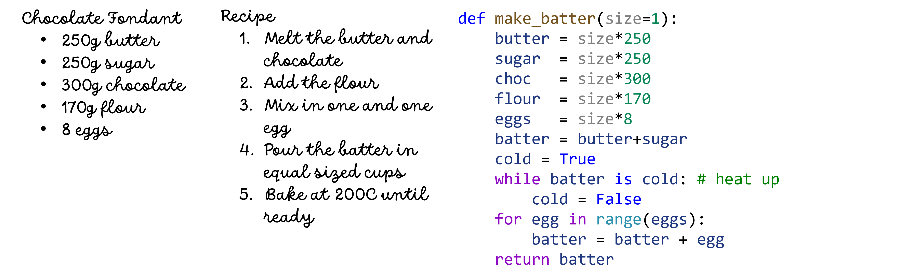

A function is several lines of code that perform a specific task. We can think of a function as a recipe, e.g. a cake recipe. To make a cake we need a certain input, eggs, flour, sugar, chocolate, then we follow a specific set of operations to produce the cake. A function in Python operates in the same way, it takes something as input (different variables), follow certain steps and returns a product (the cake).
Functions are useful because it allows us to wrap several lines of code that we believe we will use many times into reusable functions. Thus, we write the function (recipe) once and every time we want to make the same cake, we invoke the function to produce the output (cake), see figure 4.
Figure 4: My favorite chocolate fondant recipe and a Python code.
